球谐光照（Spherical Harmonics Lighting）及其应用-实验篇
简介
之前在一篇实时深度图优化的论文中看到球谐光照（Spherical Harmonics Lighting）的应用，在查阅了许许多多资料之后还是无法完全理解，我个人觉得如果之前对实时渲染技术不是很了解的话，球谐光照还是有一定难度的。大多数的资料都是从原理上描述球谐函数及其光照过程，而没有对具体的应用做解释，我直到真正动手实现了一遍球谐光照之后，才完全理解球谐光照具体的过程以及作用。
球谐光照实际上是一种对光照的简化，对于空间上的一点，受到的光照在各个方向上是不同的，也即各向异性，所以空间上一点如果要完全还原光照情况，那就需要记录周围球面上所有方向的光照。注意这里考虑的周围环境往往是复杂的情况，而不是几个简单的光源，如果是那样的话，直接用光源的光照模型求和就可以了。
如果环境光照可以用简单函数表示，那自然直接求点周围球面上的积分就可以了。但是通常光照不会那么简单，并且用函数表示光照也不方便，所以经常用的方法是使用环境光贴图，比如像这样的：

上面的图是立方体展开得到的，这种贴图也就是cubemap，需要注意的是一般的cubemap是从里往外看的。
考虑一个简单场景中有个点，他周围的各个方向上的环境光照就是上面的cubemap呈现的，假如我想知道这个点各个方向的光照情况，那么就必须在cubemap对应的各个方向进行采样。对于一个大的场景来说，每个位置点的环境光都有可能不同，如果把每个点的环境光贴图储存起来，并且每次获取光照都从相应的贴图里面采样，可想而知这样的方法是非常昂贵的。
利用球谐函数就可以很好的解决这个问题，球谐函数的主要作用就是用简单的系数表示复杂的球面函数。关于球谐函数的理论推导与解释可以参考wiki(https://en.wikipedia.org/wiki/Spherical_harmonics)。如果只是要应用和实现球谐光照，不会涉及到推导过程，不过球谐基函数却是关键的内容，球谐基函数已经有人在wiki上列好了表格，参考（https://en.wikipedia.org/wiki/Table_of_spherical_harmonics），前3阶的球谐基函数如下：
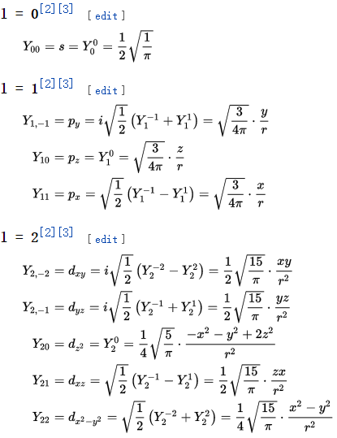
这里值得注意的是很多资料用这张图来描述球谐基函数：
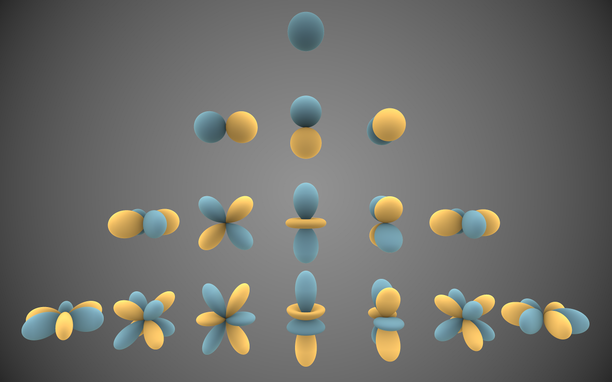
我刚开始看到这张图的时候简直觉得莫名其妙，实际上这里面每个曲面都是用球坐标系表示的，球谐基都是定义在球坐标系上的函数，r（也就是离中心的距离）表示的就是这个球谐基在这个方向分量的重要程度。我是用类比傅里叶变换的方法来理解的，其实球谐函数本身就是拉普拉斯变换在球坐标系下的表示，这里的每个球谐基可以类比成傅里叶变换中频域的各个离散的频率，各个球谐基乘以对应的系数就可以还原出原来的球面函数。一个复杂的波形可以用简单的谐波和相应系数表示，同样的，一个复杂的球面上的函数也可以用简单的球谐基和相应的系数表示。
由于球谐基函数阶数是无限的，所以只能取前面几组基来近似，一般在光照中大都取3阶，也即9个球谐系数。
实验
我们先考虑简单的情况，比如说定义一个光照函数：
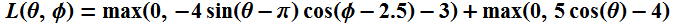
在球坐标系下，将该函数的值当做光照强度值，可以画出光照在球面上的分布情况：
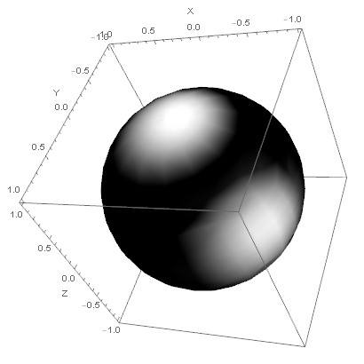
不过由于这种方式可视化方式对于亮度变换不是很敏感，所以我们把强度当成球坐标系的r，画出来是这个样子：
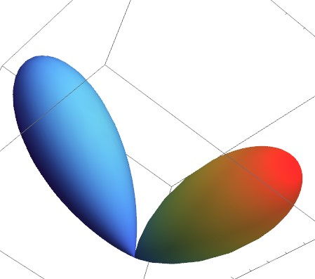
现在要将这个函数转换成球谐系数表示，首先要做的就是对其进行采样，采样的目标是确定在某个球谐基方向上强度的大小，也即求得每个球谐基Yi对应的系数ci。具体的采样方法如下：
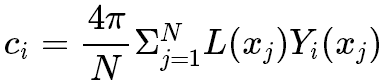
其中N为采样次数。也就是说在计算某个球谐系数ci的时候，首先在球面上采许多点，然后把这些点的光照强度和球谐基相乘（在那个方向上，球谐基函数的分量或者说重要程度就是Yi(xi)），通过这些采样点，从而得到了在每个球谐基函数上光照的分布情况。注意某个球谐基只能大致代表它那个方向上的光照强度，所以需要组合很多个球谐基函数才能近似还原出原光照。
还原的过程比较简单，通过球谐基与对应的系数相乘得到：

这里L’是还原后的光照，s是球面上的一点（也可以看成某个方向），n是球谐函数的阶数，n^2也即球谐系数的个数。
值得注意的是采样和计算ci是预先进行的，比如说复杂场景中，某个位置预先用光线跟踪方法计算环境光，从而采样出ci，这样这个位置的光照信息就压缩成几个ci表示了。但是重建光照的过程是在运行时实时进行的，从重建光照的过程中可以看出该式非常简单，其中Yi的计算从球谐基函数的表中就可以看出只涉及到简单的乘法和加法，完全可以在shader中实现（球谐基函数中的r一般默认都设置成1）。所以如果给我们一个点的球谐系数，利用上面的公式马上就等得到每个方向上的光照强度。
对于上面的那个光照函数来说，首先对原函数进行采样，采样10000个点并计算出前6阶36个球谐系数，计算出的球谐系数（部分）如下：
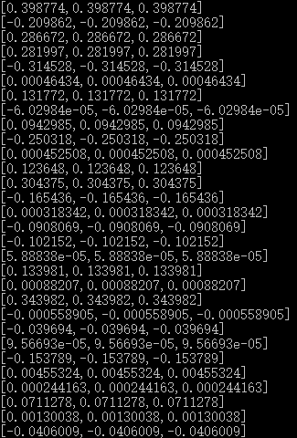
计算好了球谐系数之后，我们就可以利用这些系数来还原原光照了，利用第二个公式还原之后的效果如下：
| 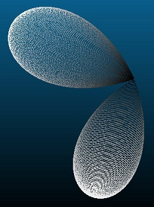 | 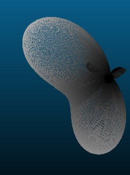 | 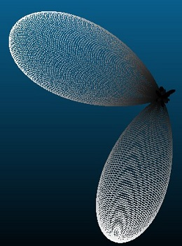 |
|---|
从左至右分别是原光照、0~2阶球谐光照、0~5阶球谐光照，从中可以看出到第5阶球谐光照与原光照已经很接近了，只是有小部分的高频信息不同。说明球谐系数越多，还原的效果越好，同时还原光照时能够较好地保留低频部分，而高频信息则丢失得比较多。不过对于光照来说，一般都是比较低频的信息，所以3阶，也就是到l=2时就已经足够了。
如果用CubeMap的方式来可视化就是这个样子：
| 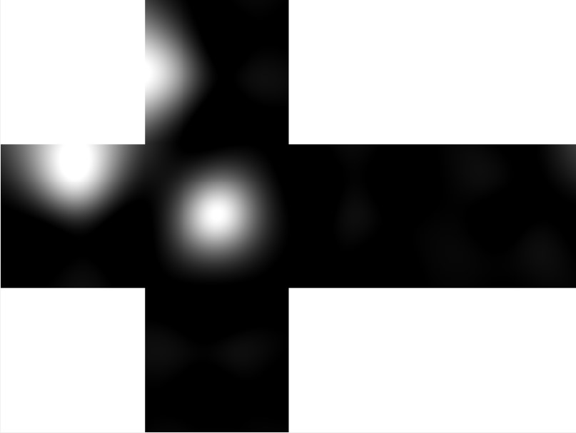 |
|---|
左图为原环境光的CubeMap，右图为0~5阶球谐系数还原之后的光照，可以看出已经还原得很好了。
抛开简单的函数，如果是复杂的环境光贴图，过程也是一样的，比如对于一个这样的环境光：
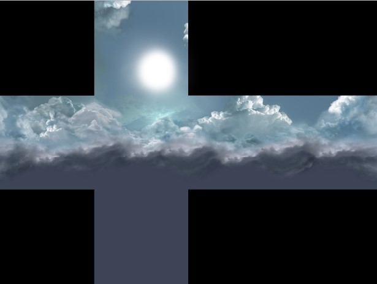
对它进行采样并还原之后，得到了这样的结果：
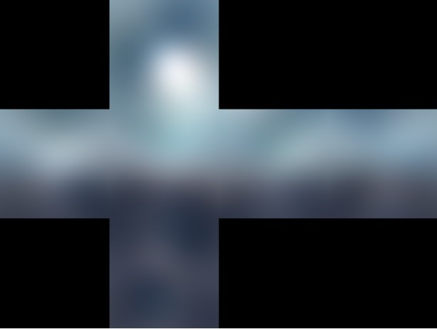
效果还不错，只是高频丢失了很多。不过这是对光照的还原，因此丢失了高频信息关系也不大。
如果把这两个光照投射到球面上进行可视化，就是这个样子：
| 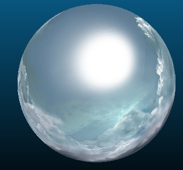 | 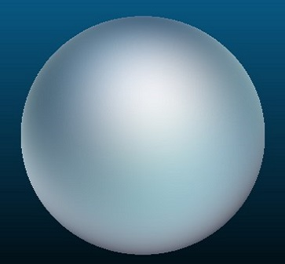 |
|---|
可惜的是网页上没法进行交互，所以只能表现出某个角度的光照还原情况。
有了上面这些实验的准备，我们就可以开始在实际的场景中应用球谐光照，下一篇我将会简要介绍一下我的实现过程。
不过这些工具都是实验性质的，如果有问题欢迎反馈。
下一篇《球谐光照（Spherical Harmonics Lighting）及其应用-应用篇》将会介绍球谐光照的实现及应用。
参考文献
Green R. Spherical harmonic lighting: The gritty details[C]//Archives of the Game Developers Conference. 2003, 56.